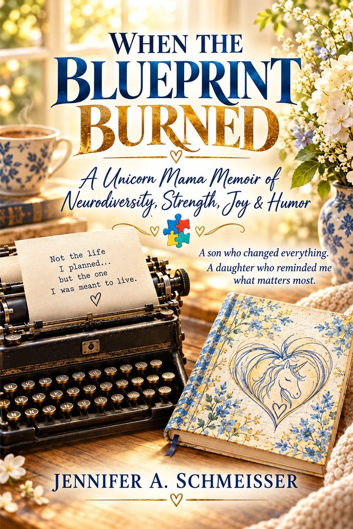

About Jennifer
Jennifer A. Schmeisser has spent more than thirty years raising her son, Ryan, who has autism and OCD. A self-taught special-education advocate, she won a 2½-year legal battle for his rights and later built the “Mama Bear Protocol” to safeguard vulnerable adults in supported living.
After a health scare forced her to face caregiver burnout, she completed Duke Integrative Health & Well-Being Coach Training, earned her ICF ACC credential, and became certified in Positive Intelligence. Her memoir, When the Blueprint Burned: A Unicorn Mama Memoir of Neurodiversity, Strength, Joy & Humor, blends laugh-out-loud stories with practical tools.
Why audiences connect
Formats
Ideal for
Autism & disability conferences · parent support groups · schools & educators · DD boards & provider agencies · healthcare & caregiver programs · employee resource groups · churches, women's ministries & retreats
For event planners
Signed books & bulk copies · free take-home resources · promo kit with headshots, bio & introduction · talks tailored to your audience
Signature topics
Grief, grit, and glitter: why grieving the blueprint isn't grieving your child, and how to celebrate the wins that matter.
Surviving the IEP “interrogation,” the 125% Rule, pop-in visits, and hiring, training, and sometimes firing the village.
The German doctor's wake-up call, habit stacking, the 8 PM shutdown, and sleep as survival.
Why abuse thrives in secrecy, plus practical prevention: pop-ins, cameras, sacred spaces, and body checks.
The kaleidoscope vs. the straw, empathy over sympathy, and small changes that make places truly welcoming.
Psalm 23 for the weary caregiver, being angry at God, and how He stayed.